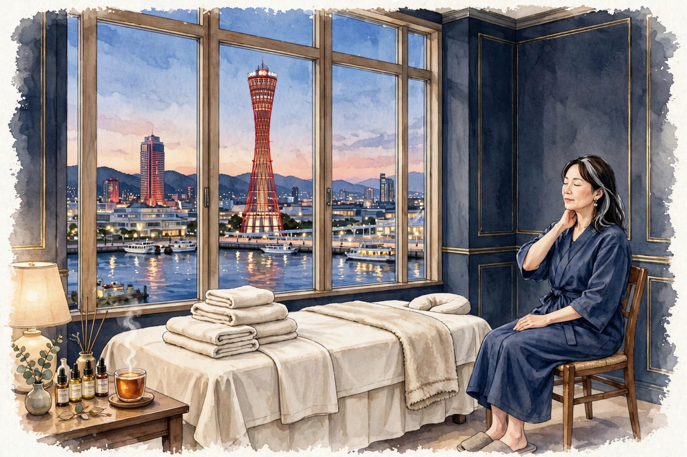
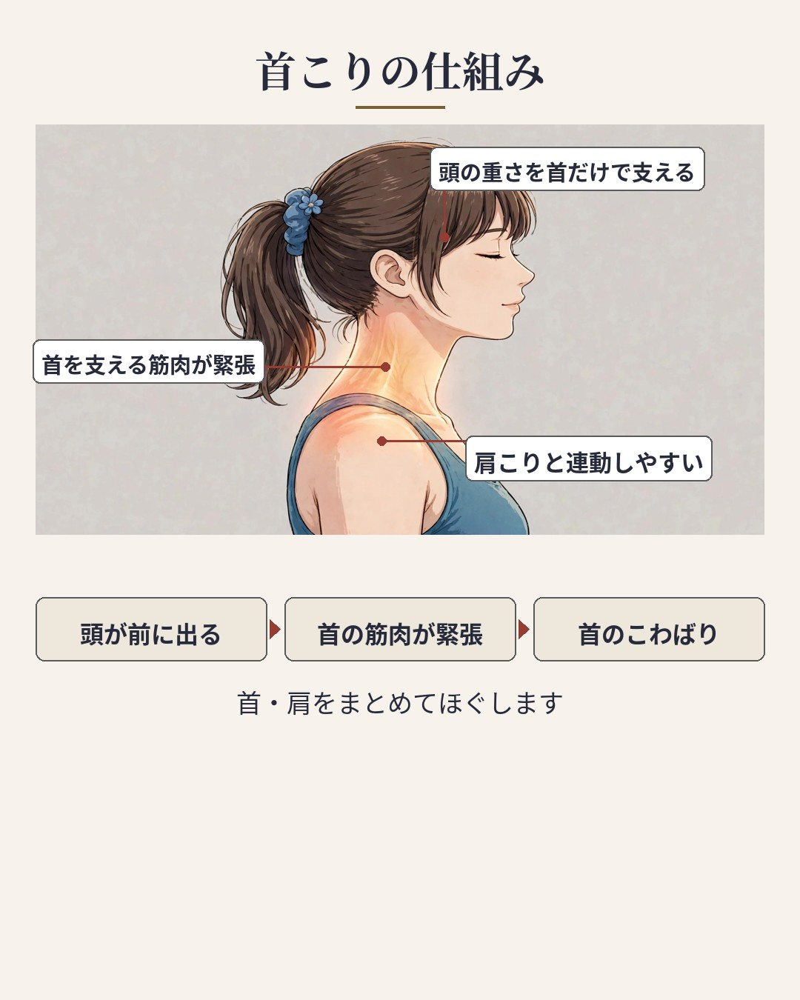

三ノ宮で50代に気になる首こり｜年代と日常の過ごし方、セルフケア、受診の目安セルフケア

50代になって、首の付け根の張りや回しにくさが以前より気になるようになった、休んでも首まわりの重さが残る感じがする方へ。50代に目立ちやすい首こりについて、一般的な解説と考えられる要因、日常で取り入れられるセルフケア、受診の目安を整理しました。
首こりとは — 50代に気になりやすい首の張りと回しにくさ
首こりは、首の付け根から後頭部、肩にかけての張りや重さ、動かしにくさを感じる状態を指す、日常的によく使われる言葉です。感じ方には、首の後ろが板のように張る感じ、頭を左右に向けたときの引っかかる感じ、首から肩にかけて重だるく感じる、といった表れ方があり、程度には個人差があります。50代になると、「朝、目覚めたときから首が回しにくく、洗顔や着替えのときに気になる」「細かい文字やスマートフォンを見続けた日の夕方に、首の後ろが張って頭まで重く感じる」「家事で下を向く時間が続いた日や、買い物袋を持って歩いた日に、首から肩が重く感じる」「枕の高さが合っていないような感じがして、朝の首の張りが残る」「若い頃より、首まわりの張りが休んでも残りやすく感じる日が増えた気がする」といった声を聞くことがあります。年代を重ねる中で、仕事や家事、家族の用事が重なりやすく、眠りが浅い時期や体調のゆらぎと重なって感じられる方もいるようです。なお、場面を週末・休みの日に絞った記事三ノ宮で週末に整えたい首こり｜休みの日の過ごし方とセルフケア、受診の目安、朝の起き抜けに絞った記事三ノ宮で朝に気になる肩こりと首の重さ｜起き抜けの過ごし方とセルフケア、受診の目安、画面仕事の日に絞った記事画面を見続けた日の、目の疲れ感と首こり｜三ノ宮で働くデスクワーカーの夜のケア、同じ50代で部位を肩に絞った記事三ノ宮で50代に気になる肩こり｜年代と日常の過ごし方、セルフケア、受診の目安も公開しています。この記事では場面を一つに限らず、50代という年代と日常全体の過ごし方から首こりを眺めます。ここでは原因を一つに決めつけず、考えられる要因と日常の付き合い方を整理します。
関係する部位の目安は、図1のとおりです。
図1｜50代の首こりで張りやすい首・肩（正面）

考えられる要因

要因は一つとは限りません。パソコンやスマートフォン、細かい文字を見る時間が長く、頭が前に出た姿勢やうつむいた姿勢が続くことは、重い頭を支える首まわりに負担がかかる過ごし方として挙げられることがあります。家事で下を向く姿勢が続くこと、買い物や荷物を片側だけで持ち続けること、仕事や家事で緊張が続く時間帯が長いことも、重なって感じられる場合があるようです。そのほか、枕の高さや硬さがその日の首の角度と合っていないと感じられること、眠りが浅い日や夜中に目覚める日が続くこと、水分をとる機会が少ないこと、首元や肩まわりの冷えなどが重なると、首の張りや重さとして感じられる場合もあるとされます。50代は更年期前後の時期と重なる方も多く、体調のゆらぎとあわせて首まわりの張りを覚える方もいるとされます。更年期の時期の過ごし方については、ブログ記事三ノ宮で更年期のゆらぎが気になる方へ｜考えられる要因と日常の整え方、受診の目安や更年期のゆらぎのお悩み別ケアページもあわせてご覧ください。東洋医学では、首まわりの張りは気・血の巡りのバランスの変化として捉えられてきました。首こりそのものの考え方は首こりのお悩み別ケアページ、うつむき姿勢についてはスマホ首のお悩み別ケアページ、肩まわりについては肩こりのお悩み別ケアページにもまとめています。首が気になった日付や、その日の過ごし方、枕や前の晩の眠りを簡単にメモしておくと、ご自身のパターンを眺める参考になります。
日常で取り入れられるセルフケア
まずは日常の小さな工夫から始めてみてください。画面や細かい文字を見続ける時間には区切りを入れ、席を立って背伸びをする、肩を大きくゆっくり回す、首を左右にゆっくり倒す、遠くを見て目を休ませる、といった小さな動きは取り入れやすい方法です。家事の合間にも、下を向く姿勢が続いたら一度顔を上げて胸を開き、深呼吸をすることも意識しやすい工夫です。荷物は両手に分けたりリュックを使ったりして、片側だけに重さが寄らない持ち方も考えられます。姿勢の面では、画面の高さや椅子の位置、本やスマートフォンを持つ高さを眺め直し、頭が前に出にくい過ごし方を意識することも一つの方法です。体を温める面では、温めたタオルを首の後ろに当てる、帰宅後に湯船につかって首元まで温める、首元を冷やさない服装を選ぶ、といった過ごし方も取り入れやすいケアです。水分は一度にまとめてではなくこまめにとること、食事の間隔が空きすぎないようにすることも、意識しやすい過ごし方です。朝の張りが気になる方は、枕の高さや寝具の当たり方を眺め直すこと、夜は照明を少し落として早めに休む準備をし、寝る前のスマートフォン時間を短くすることも、続けやすい工夫とされます。眠りについては眠りの浅さのお悩み別ケアページ、夜の過ごし方についてはブログ記事よく眠るための夜の工夫｜照明・入浴・スマホとの距離の取り方もあわせてご覧ください。張りが強いときは、無理に首を大きく動かしたり強く押しすぎたりせず、気持ちよい範囲にとどめることが続けるうえでの目安になります。無理のない範囲で、一つか二つ選ぶところから始めてみてください。
セルフケアで意識したい場所と動きは、図2のとおりです。
図2｜肩回しと首を温めるセルフケア（横向き）

受診の目安
首の張りや痛みが数週間以上続く、手や腕にしびれや力が入りにくい感じがある、首を動かせないほど痛みが強い、発熱を伴う、首や頭を打ったあとから痛みが出た、頭痛や吐き気、めまいを伴う、張りや痛みが日ごとに強くなる、日常生活や仕事に支障が出ている——こうした場合は、自己判断で様子を見続けず、整形外科や内科などの医療機関への相談をご検討ください。首まわりの不調は、さまざまな体の変化で表れる場合もあるとされるため、原因を一つに決めつけずに相談することが目安になります。当店の施術はリラクゼーションを目的としたもので、症状の診断・治療を行うものではありません。気になる症状があるときは、まず医療機関で相談したうえで、日常のケアの一つとしてサロンのご利用をお考えください。
三ノ宮で、首と肩まわりを休める時間を
ステラスピカは神戸・三ノ宮エリアの女性専用サロンです。営業時間は月〜土17:00〜22:00（日曜休み・完全予約制）、完全個室でご案内します。オイルマッサージ／美容整体は90分10,000円（税込）で、施術歴30年のセラピストが、その日の体調や気になるお悩みをうかがいながら、その日の状態に合わせて無理のない圧と内容で全身をケアする施術を組み立てます。施術では、首・肩・背中から頭部まわりへ、つながりを意識しながら丁寧にほぐしていきます。なお、ステラスピカは近日開院予定のため、ご予約の受付はまだ開始していません。受付開始はこのページでご案内します。料金やメニューの詳細はメニュー・料金、開院後のご予約の流れはご予約・お問い合わせをご覧ください。
ステラスピカ（三ノ宮） — 女性専用、90分 10,000円、月〜土17:00〜22:00、完全予約制です。